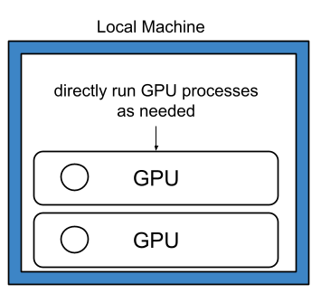
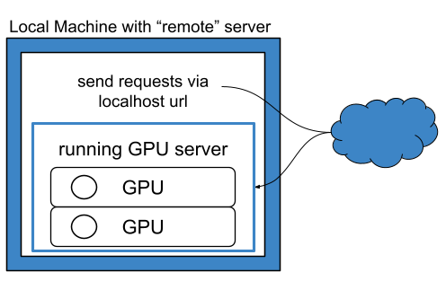
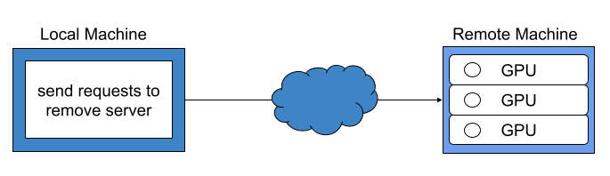

Choosing an inference setup¶
The LLM steps (process_trials, summarize_patients, the *_with_llm checks and the other LLM-backed tools) run
the LLM in one of two modes, chosen by remote.enabled:
| Mode | Setup | Use when |
|---|---|---|
Local (remote.enabled: false, the preset default) |
The package runs the model in-process with vLLM | You have suitable local GPUs and want one self-contained run |
Remote (remote.enabled: true) |
A vLLM server on the same machine | You have local GPUs and want the model to stay loaded across runs |
| Remote | Any OpenAI-compatible endpoint elsewhere | The model is hosted on another machine, a cluster or an approved service |
Both remote setups are configured the same way, with endpoint URLs; only where the endpoint lives differs. The mode affects only the LLM. TrialSpace and the decision model always run in-process; see the GPU recommendations.
Local mode¶
The package loads the model with vLLM in the workflow's own process. There is no server to start or manage.
- Configuration: each LLM section's
localblock setsmodel_name,engine(keyword arguments forvllm.LLM, such asmax_model_len,tensor_parallel_sizeandgpu_memory_utilization),generation(sampling parameters) andchat_template_kwargs. See the configuration reference. - Engines: an engine loads on first use and stays loaded. One engine is loaded at a time: a section with
different engine settings (the preset gives trials a 100,000-token context and patients 200,000) shuts the loaded
engine down and loads its own, so moving between the trial and patient steps reloads the model. The engine
reserves
gpu_memory_utilization(0.9) of its GPUs' memory: callmatchminer_ai.llm.backends.clear_local_llm_cache()before TrialSpace or the decision model loads on the same GPU. - Requests: prompts go to the engine in batches. Answers are validated and retried, but not constrained to a JSON schema; structured outputs need a server.
Local mode suits one-off runs and testing.

Remote mode¶
The package sends requests to OpenAI-compatible Chat Completions endpoints instead of loading the model, even when the server runs on the same machine.
from matchminer_ai import load_preset
config = load_preset("default")
config.remote["enabled"] = True
config.remote["server_urls"] = ["http://localhost:8000/v1"]
- Model name: each LLM section's
remote.model_nameis the model the endpoint serves (by defaultnvidia/NVIDIA-Nemotron-3.5-Super-VL-120B-A12B-NVFP4), withrequest_paramsandextra_bodyfor the request. To adopt whatever a server serves,configure_served_modelreads its/v1/modelsand applies that model's sampling profile to the sections you name; see LLM server helper. - Throughput: requests flow continuously through one adaptive pool over every URL in
remote.server_urls, and each patient's next note chunk is sent as soon as the previous one is final. See LLM runtime. - Structured outputs: cohort extraction and the other structured steps constrain each answer to their JSON schema
(
structured_outputs: true). - Keys: set
OPENAI_API_KEYif the server needs one. - Remote only: guideline catalogs (
summarize_guidelines,summarize_pdq) require remote mode.
A vLLM server on the same machine¶
A separate server keeps the model loaded across calls and workflows. start_vllm_servers() starts one vllm serve
process for each URL in remote.server_urls (one at localhost:8000 by default). Each serves the task section's
local model and engine settings under its remote.model_name, with the model's reasoning and tool-call parsers:
from matchminer_ai.llm.vllm_server import start_vllm_servers
servers = start_vllm_servers(config=config) # waits until each answers /v1/models
...
for server in servers:
server.terminate()
The default preset's LLM sections all use the same model, so one server serves all of them. See LLM server helper.

An endpoint elsewhere¶
Point remote.server_urls at a model hosted on another machine, a compute cluster or an approved service. The host
manages the GPUs and the server, which does not have to be vLLM.
- Answers and reasoning: the endpoint must return the final answer in
message.contentand any reasoning separately (message.reasoningorreasoning_content), as vLLM does with a reasoning parser. Endpoints that mix reasoning intomessage.contentare not supported. - Providers:
remote.providerselects authentication.openai(default): any OpenAI-compatible endpoint, with the key fromOPENAI_API_KEY.google_agent_platform: Google Agent Platform endpoints, with refreshable Google Application Default Credentials for the project inremote.google_project_id. vLLM-onlyextra_bodyfields are left out.databricks_anthropicserves only structured requests, such as the SQL workup agent, not the matching steps.
Warning
Before sending clinical text to an endpoint outside your local environment, confirm that the endpoint is approved for your data and institution.
